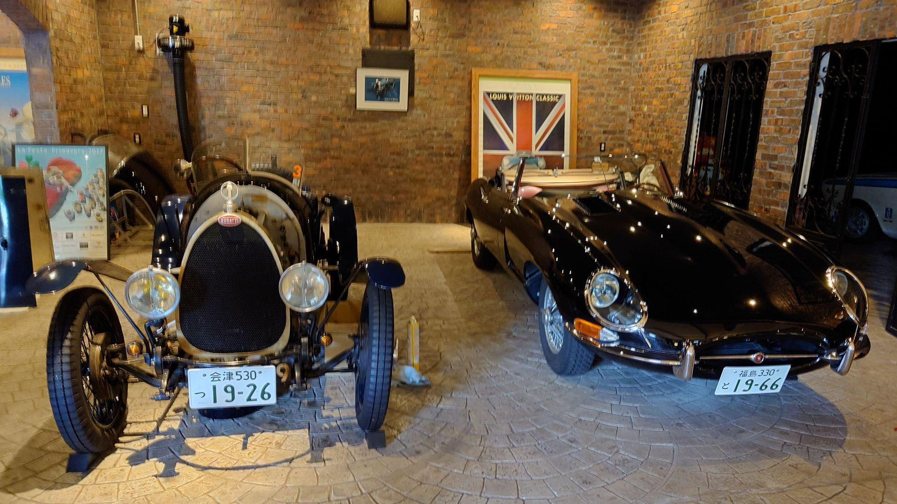

OUR MOTTO
一台一台の物語を、
未来へ。
走る・学ぶ・つながる
OUR SPIRIT
クラシックカーの
こだわりを、未来へ。
1930年代から1980年代にかけて、世界中で名車と呼ばれる車たちが誕生しました。それらは時代の美意識、技術、そして人々の夢を乗せて走っていました。
私たちは、それぞれの車が持つ「走る歓び」「造形美」「機械としての誇り」と、その一台だけの物語を大切にしています。
PC競技という精密な走行技術を通じて車の魅力に触れ、仲間とその時間を共有する。そして、次の世代へ伝える。それが私たちの想いです。
トップページへ戻る ↗
SEVEN FOREST CLASSIC
走る。学ぶ。つながる。